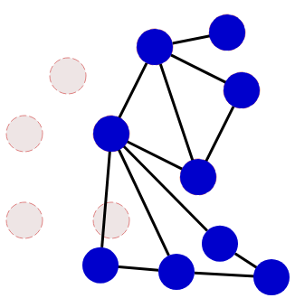
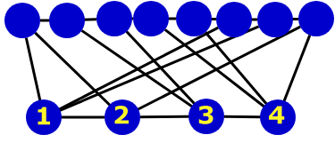
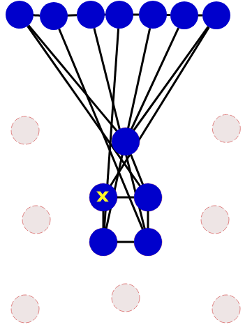
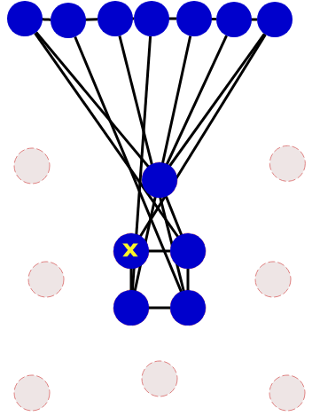

Pallokuvio
Raahaa vasemmalla olevat siniset pallot harmaiden paikanpitäjäpallojen päälle niin, että lopputulos vastaa oikealla esitettyä tavoitekuviota.
| Tavoitekuvio | |
Raahaa vasemmalla olevat siniset pallot harmaiden paikanpitäjäpallojen päälle niin, että lopputulos vastaa oikealla esitettyä tavoitekuviota.
| Tavoitekuvio | |

Tästä eteenpäin on helppo asetella loput kolme palloa paikoilleen.

Seuraavaksi voimme asetella viimeksimainitun pallon kolme muuta naapuria.
Tämän jälkeen loput neljä palloa ovat suoraviivaisia asetella paikoilleen.
Voimme aluksi laskea, kuinka monta viivalla yhdistettyä naapuria kullakin tavoitekuvion pallolla on. Löydämme 4 palloa, joista kullakin on 4 naapuria, ja kaikilla muilla on 3 naapuria. Ohessa 4 naapuria omaavat pallot ovat tummanpunaisia ja 3 naapuria omaavat vaaleanpunaisia. Kuvasta huomataan, että 4 naapuria omaavat pallot muodostavat katkeamattoman "naapuriketjun".

Jotta pallojen yhteyksien hahmottaminen olisi helpompaa, voimme asetella siniset pallot niin, että 3 naapurin pallot tulevat yhteen riviin ja 4 naapurin pallot toiseen (ja 4 naapurin pallot on järjestetty keskenään ketjuksi ilman niiden keskinäisten viivojen risteämiä).
4 naapurin palloketju voidaan asettaa tavoitekuviossa sitä vastaavaan paikkaan vain kahdella tavalla: joko edeten alhaalta ylös tai ylhäältä alas. Kokeillaan ensimmäistä vaihtoehtoa (pallojen numerointi havainnollistaa, missä järjestyksessä ketjun pallot aseteltiin).

Nyt tuli ongelma: kun yritämme lisäksi asettaa jonkin 3 naapurin pallon (esim. sen, joka oli edellisessä kuvassa oikealla ylhäällä), ei sille löydy yhtään tavoitekuviota vastaavaa paikkaa.

Edellinen arvauksemme 4 naapurin pallojen ketjun suunnasta oli siis väärin. Kokeillaan nyt asettaa ketju ylhäältä alas. Tämän jälkeen voimme kokeilemalla löytää tavoitekuviota vastaavan paikan edellä epäonnistuneesti yrittämällemme 3 naapurin pallolle.
 

Myös lopuille 3 naapurin palloille löytyy tavoitekuviota vastaavat paikat kokeilemalla suhteellisen pientä määrää vaihtoehtoja.


Tehtävän palloista ja viivoista muodostuva kuvio vastaa tietojenkäsittelyn erittäin tärkeää tietorakennetta, graafia. Tehtävän tavoite puolestaan havainnollistaa tietojenkäsittelyn ongelmaa, jossa haluamme täsmätä kaksi graafia keskenään.
Tämä ongelma tunnetaan nimellä graafien isomorfismi, ja se on yleisessä tapauksessa erittäin vaikea ratkaista: ongelmaan ei tunneta yhtään ratkaisua, joka toimisi tehokkaasti isoilla mielivaltaisen rakenteen omaavilla graafeilla.
Joidenkin verrattaen yksinkertaisten tai säännöllisten graafien (kuten tehtävän pallokuvioiden) yhteydessä voi kuitenkin olla mahdollista löytää ratkaisu nopeastikin. Esimerkiksi tässä tehtävässä ratkaisun löytäminen helpottui, jos vertailimme palloihin liittyvien viivojen lukumääriä.
Katso lisää esim. https://fi.wikipedia.org/wiki/Graafi.